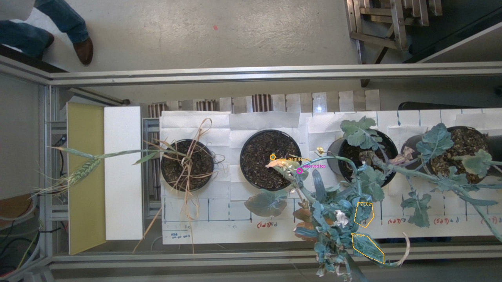
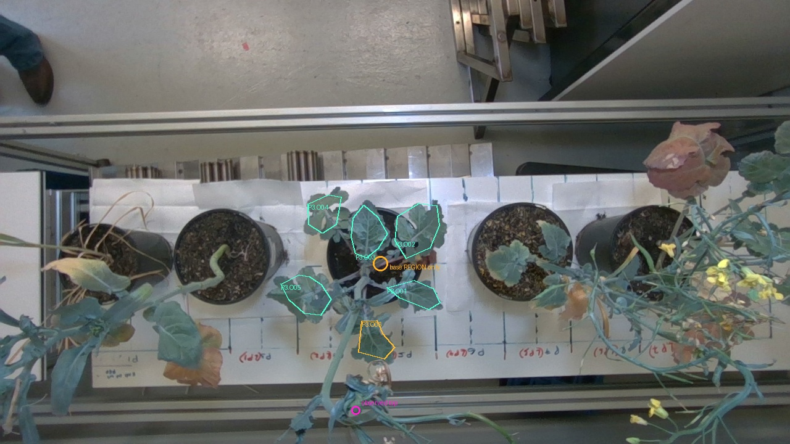

Saved 7 October 2026. The reviewed geometry is available; anatomical definitions, missing source endpoints and independent measurement evidence still limit physical validation. This handoff records the smallest useful next evidence for each plant.
Historical limit: new photographs of plants that have grown, moved, wilted or changed pose cannot validate the 28 September capture. If its unchanged state is unavailable, preserve the historical gaps and collect a new paired scan/reference dataset.
What is already available
Five reviewed specimen selections and three distances between observed points are saved. All distances use the existing conditional reconstruction scale. Display-Z spans are not plant heights; partial chords are not whole-leaf measurements.
Plant
Observed X × Y × Z span, cm*
Saved observed chord, cm*
Accepted anatomical height
P1
17.02 × 33.06 × 46.73
5.643 (P1.O03.observed_blade_extent)
Absent
P2
33.13 × 19.03 × 49.84
None
Absent
P3
24.81 × 24.13 × 49.00
7.475 (P3.O03.blade_chord)
Absent
P4
17.46 × 17.15 × 43.55
None
Absent
P5
33.32 × 35.23 × 24.39
12.149 (P5.O04.terminal_lamina_chord)
Absent
*Conditional model-coordinate conversion. Original recording units and physical ChArUco dimensions remain unavailable. No validation error score is calculated here.
Hypothetical scale sensitivity
Multiply each saved distance by 0.99/1.01, 0.98/1.02 or 0.95/1.05. These are chosen scenarios, not measured scale errors or uncertainty bounds. They change neither organ identity nor missing geometry.
Observed chord
Baseline cm*
Hypothetical ±1%
Hypothetical ±2%
Hypothetical ±5%
Existing endpoint-disk range, separate
P1.O03.observed_blade_extent
5.643
5.586–5.699
5.530–5.756
5.361–5.925
4.98–6.67 cm*
P3.O03.blade_chord
7.475
7.401–7.550
7.326–7.625
7.101–7.849
6.71–8.42 cm*
P5.O04.terminal_lamina_chord
12.149
12.027–12.270
11.906–12.392
11.541–12.756
10.71–13.76 cm*
Endpoint ranges are the existing min/max distances from independently reviewed 4px source endpoint disks. They are not confidence intervals. No combined uncertainty interval, reference fitting or scale-corrected accuracy has been calculated.
First priority: First label O01/O02 by node, then capture the fine O03 dry tip and O04 body boundary; these cannot be recovered by scaling the shorter observed chord.
Existing photos establish: Overview and raw frames support the cereal specimen, upper blade O03 and ear O04. Six dimensions have approximate photo-readable candidates: O01 width; O02 length/width; O03 length/width; O04 body length.
Existing photos do not establish: There is no supporting whole-height ruler photograph. O01 length and O04 width are operator-only; O01 identity is unresolved and O02 is tentative. O03 has a photographed width around 0.8 cm (0.6–1.0 interval), while the original 9 cm annotation remains unchanged. The fine dry O03 tip and distal ear-body endpoint lack selected 3D support in the reviewed 4px disks.
Copied unchanged from the finalized source review. Colour annotations are source-review candidates, not accepted physical ground truth.
Definitions to freeze before comparison
Height: choose the actual soil-emergence point of the measured cereal stem, and explicitly decide whether the very tip includes awns and dry terminal tissue. Keep vertical height distinct from stem-path length and 3D endpoint chord.
O01/O02: fix which lower/middle blade is meant by attachment-node identity, not length. O03: include or exclude its fine dry terminal continuation consistently.
O04 is a cereal ear. Define body base and distal body boundary separately from awns; keep it outside leaf statistics. Width means the photographed section unless a maximum-width search is explicitly performed.
Minimum useful next evidence
Action
What to collect or decide
Minimum starting set
P1-A1
Mark O01–O04 on one unobstructed context image showing the cereal stem nodes. Record awn/dry-tip policy and separate ear from blades.
One context photograph plus written endpoint decisions; no ruler needed.
P1-A2
Expose the soil-emergence junction without changing the pose being measured. Photograph full stem with scale zero and the declared highest terminal structure; add an oblique view that also sees both.
Start with two calibrated oblique/full-plant views, one with a readable in-plane scale. Add close-ups only where base or fine terminal pixels are not legible.
P1-A3
Capture sharp overlapping close-ups of the O03 dry tip and O04 distal body/awn junction, linked to the context view.
Two calibrated overlapping close-ups; combine both structures in a pair if visible sharply.
P1-A4
With organ identity retained, show both ruler endpoint offsets for O01 blade length and O04 ear-body width. For other widths mark the photographed section on the organ.
One readable length image for O01 and one width image for O04; existing readable ruler values need not be repeated merely to fit the reconstruction.
Status: physical evidence not collected. Counts are starting sets; add a view only where the required endpoint, join or attachment remains hidden. All 47 individual dispositions are saved in the dimension CSV/JSON.
P2: measurement handoff
First priority: Resolve the two leaf attachment identities before making any 3D leaf comparison.
Existing photos establish: The bent basal stem and compact puckered crown establish specimen identity. O02 length (3.6–4.2 cm) and photographed width (3.2–3.8 cm) have approximate readable photo candidates.
Existing photos do not establish: O01 is only tentative and O02 unresolved in the reconstructed crown. O01 length/width are operator-only. Height photos obscure the lower zero/joining offset and the curled top changes pose; they do not independently reconstruct 51.7 cm.

Copied unchanged from the finalized source review. Colour annotations are source-review candidates, not accepted physical ground truth.
Definitions to freeze before comparison
Height origin is the actual soil-emergence point of the bent stem, not the upper bend. Record the highest living/dry/bud structure policy and vertical versus along-stem convention.
O01 and O02 need unique attachment-node identity through the puckered overlapping crown. Specify lamina-only base versus petiole inclusion and straight chord versus along-curved-midrib length.
The width section in each ruler photo must be identified on the in-situ leaf; curled leaves measured held flat are a different pose.
Minimum useful next evidence
Action
What to collect or decide
Minimum starting set
P2-A1
Label the two measured leaves at their attachment nodes, with an oblique view showing each node and full blade through the crown.
One labelled context image and a second oblique view if either node is hidden.
P2-A2
Show the actual soil junction, curved stem and declared highest structure with a readable scale zero and tip. If using two rulers, show both readings at their common join.
Start with two calibrated oblique views; include a full-range ruler in one, or add one join close-up if the ruler overlap cannot be read.
P2-A3
Measure labelled O01 with both length endpoint readings and both edges at the chosen width section visible. Keep the held/flattened versus in-situ pose documented.
One length and one section-width close-up; if O02 can be unambiguously linked to its existing photos, retain those approximate references.
Status: physical evidence not collected. Counts are starting sets; add a view only where the required endpoint, join or attachment remains hidden. All 47 individual dispositions are saved in the dimension CSV/JSON.
P3: measurement handoff
First priority: Resolve O03 base convention and take one independent matching length reference first; this is the smallest route to improving the existing complete candidate chord.
Existing photos establish: Five leaf IDs (O01–O05) have strong overview-to-scan support. Five dimensions have approximate photo candidates: O01 width, O04 length/width and O05 length/width. O03 has a 7.475 cm observed chord and an operator-only 7.5 cm annotation.
Existing photos do not establish: The O03 numerical closeness is not validation: its 4px endpoint-pair range is 6.71–8.42 cm, base convention remains tentative and units are unconfirmed. O01/O02/O03/O06 lengths and O02/O03/O06 widths are not independently photo-readable. The hand hides the two-ruler join in height photos; Media (2) and Media (3) are duplicates, not repeats.

Copied unchanged from the finalized source review. Colour annotations are source-review candidates, not accepted physical ground truth.
Definitions to freeze before comparison
The visible purple petiole junction is not the soil-level stem base. Identify the latter and the end of the long flowering stalk before height.
For O03 define whether the base is the lowest visible basal lamina, inclusion of small basal lobes, or the petiole junction. Existing observed chord uses basal lamina to apex and is not along-midrib length.
O01/O02/O04/O05 require complete basal boundaries around lobes/crossing stalks; O06 attachment identity remains tentative. Specify photographed width section and whether any maximum is being claimed.
Minimum useful next evidence
Action
What to collect or decide
Minimum starting set
P3-A1
On O03, mark the lowest lamina boundary and apex used for the existing chord, state petiole/small-lobe inclusion, and photograph both ruler readings unobscured.
One labelled blade context/length image if both boundaries are visible; retain unflattened pose or record pose change.
P3-A2
Show O06 attachment and the basal lobes of O01/O02/O04/O05 without crossing stems hiding them. Link each to its stable O ID.
Start with two opposing oblique crown views that expose the relevant nodes; add a node close-up only where a boundary remains hidden.
P3-A3
Show soil-level stem origin and terminal flowering-stalk point with a readable full-range scale. Record two-ruler overlap if used.
Two calibrated oblique/full-plant views; one in-plane readable height reference or an extra join close-up.
P3-A4
After identities/definitions, collect readable length endpoints for O01/O02/O06 and section-width edges for O02/O03/O06; retain existing approximate O01-width/O04/O05 references only if their sections and endpoints can be linked.
Three length and three width close-ups at most; combine views where both measurements are independently readable. O03 length is covered by A1.
Status: physical evidence not collected. Counts are starting sets; add a view only where the required endpoint, join or attachment remains hidden. All 47 individual dispositions are saved in the dimension CSV/JSON.
P4: measurement handoff
First priority: Resolve organ type and identity first. Re-measuring widths before that does not create usable leaf references.
Existing photos establish: Yellow flowers, sparse branching and narrow pod-like structures establish specimen identity and provide organ-type/context evidence.
Existing photos do not establish: All eight O01–O04 dimensions are unusable for leaf validation pending organ type. Similar narrow structures cannot be uniquely traced between held photos and the branching scene. The ruler base/join offsets for height are not simultaneously legible.
Copied unchanged from the finalized source review. Colour annotations are source-review candidates, not accepted physical ground truth.
Definitions to freeze before comparison
Confirm whether O01–O04 are leaves, pods or other reproductive structures before defining leaf statistics.
For each identified organ, specify body-versus-stalk/pedicel endpoints and whether a curved organ is measured as straight chord or body path. Width needs a chosen section or separately established maximum.
Height needs actual soil emergence and a declared terminal bud/flower tip; the observed pale cluster is not a certified outer endpoint.
Minimum useful next evidence
Action
What to collect or decide
Minimum starting set
P4-A1
Label O01–O04 at their branch attachments and record organ type. Photograph each intact connection, body and distal end.
One labelled context plus close-up views sufficient to trace all four connections; start with two opposite oblique branch views.
P4-A2
Expose soil emergence and terminal bud/flower in the same unchanged pose; show zero and tip against a full-range scale.
Two calibrated oblique/full-plant views, one readable scale reference; add join close-up only if using two rulers.
P4-A3
After A1, measure each defined organ body length and chosen width section with both endpoint offsets visible. Use a scale legible at the narrow width; record instrument resolution.
One length and one width view per organ (up to eight); combine only when all relevant endpoints remain independently readable.
Status: physical evidence not collected. Counts are starting sets; add a view only where the required endpoint, join or attachment remains hidden. All 47 individual dispositions are saved in the dimension CSV/JSON.
P5: measurement handoff
First priority: Show O04 terminal lamina and its lower basal origin together before any full-length comparison; retain the existing partial chord as partial.
Existing photos establish: All five organ IDs have strong overview-to-scan support from shape, damage and radial topology. Five dimensions have approximate photo candidates: O01/O03/O05 widths and O04 length/width. O04 has a 12.149 cm observed terminal-lamina chord.
Existing photos do not establish: The O04 terminal-lamina base differs from the ruler origin near lower basal lobes, so 12.149 versus 12.9 cm is not a full-leaf residual. The saved height ruler ends before the highest leaf and base alignment is hidden; 31.8 cm cannot be extrapolated. O01/O02/O03/O05 lengths and O02 width remain operator-only.
Copied unchanged from the finalized source review. Colour annotations are source-review candidates, not accepted physical ground truth.
Definitions to freeze before comparison
Height origin is the soil-emergence point under the radial petiole cluster, not the visible fork. Decide which tip and damaged/dry structures count.
O04 existing chord covers the terminal lamina only. Define the lower basal-lobe/lamina origin used in the ruler photo before comparing full length. O05 also has unresolved petiole inclusion.
For O01/O03 curled necrotic margins, specify whether folded dry tissue is included and whether measurements use in-situ or flattened pose. O02 needs an explicit base at the crowded fork.
All width references are photographed sections, not established global maxima.
Minimum useful next evidence
Action
What to collect or decide
Minimum starting set
P5-A1
Photograph O04 from its lowest declared lamina/lobe origin to apex, connected to the radial fork; mark the old terminal-lamina chord separately. State petiole inclusion for O05 and dry-margin handling for O01/O03.
One labelled O04 context close-up plus an oblique view if the lower origin is hidden; definitions recorded in writing.
P5-A2
Show the actual soil-emergence point and declared highest leaf/tip against a ruler spanning the whole plant.
Two calibrated oblique/full-plant views, one readable full-height scale reference; avoid extrapolating beyond a ruler end.
P5-A3
After definitions, show length offsets for O01/O02/O03/O05 and both width-section edges of small central O02. Preserve a labelled unflattened context before holding any blade.
Four length and one width close-up at most; O04 can reuse its approximate reference only after the same basal origin is linked.
Status: physical evidence not collected. Counts are starting sets; add a view only where the required endpoint, join or attachment remains hidden. All 47 individual dispositions are saved in the dimension CSV/JSON.
Shared recording rules
Record specimen and organ IDs, capture date/time, endpoint definitions, units, instrument resolution, pose and any handling/flattening.
Take the reference independently of reconstruction tuning. Repeated readings quantify repeatability separately; no one-shot photo becomes exact ground truth.
Use a measured in-plane scale with visible endpoint offsets; retain the full image and original files. For two rulers, retain their common join readings.
User requested stem base to very tip. Record whether this means gravity-vertical height, a straight 3D endpoint chord or path length along a stem; the existing display-Z span supplies none of these automatically.
For two rulers: (lower reading at join - lower reading at stem base) + (upper reading at tip - upper reading at join).
Photo counts below are practical starting sets, not guarantees. Combine views only if all stated features are sharp and visible. Geometry requires calibrated overlapping views of the same unchanged endpoints; a ruler-only image cannot create missing reconstructed surfaces.
Sources and hashes are preserved in measurement_handoff.json. No previous artifact, source image, point, calibration or manual annotation was modified.